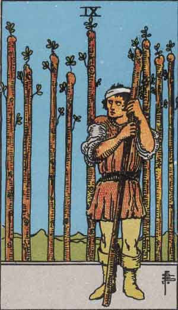

Main | Arcana | Cups | Pentacles | Swords | Wands
Nine of Wands

Upright
Wisdom, Perseverance, Last Stretch
- Expect the worst and prepare yourself against any foreseeable attacks. Be prepared and you won't be sorry later.
- You are close to being done. Just a little bit more to go. Be resilient!
- Last minute challenges to plans or projects may feel daunting but you've come this far and must push on! Trust in yourself!
- Are your interests in question? Question yourself and dig into the answers. Victory is yours!
- Let others bring their current selves to you without judgment or their past selves.
- Reroll.
Reversed
Struggle, Defensive, Paranoid
Keep fighting! You are tired but cannot rest. Your mind is cloudy but you must follow thru. Beware new commitments. If your plate is full, deflect! People are ready to help you. Don't get paranoid and feel like you are on your own. This may not be the time to be aggressive. Just follow the path steady and do not give up!